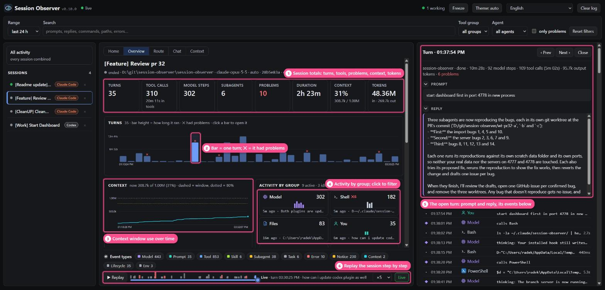
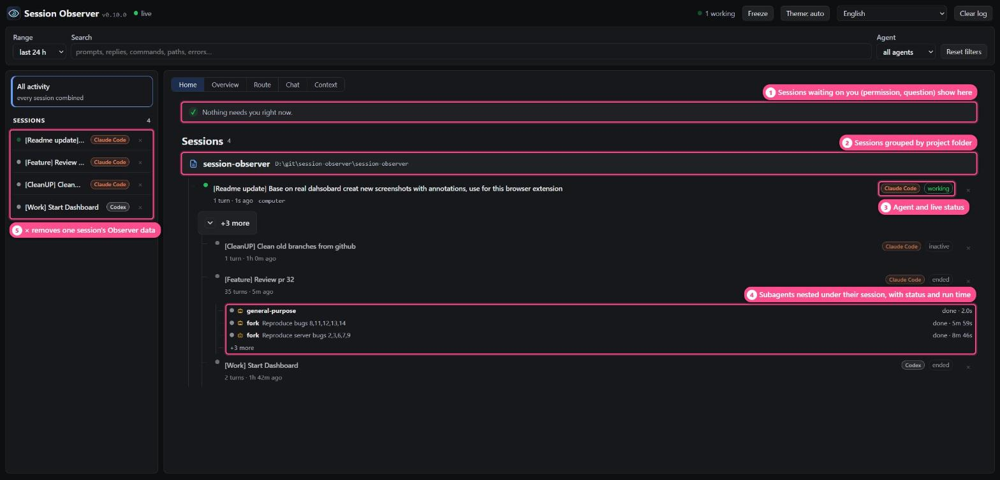
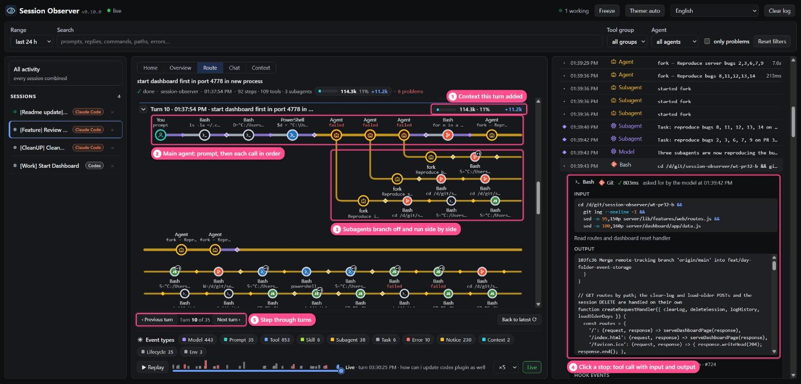
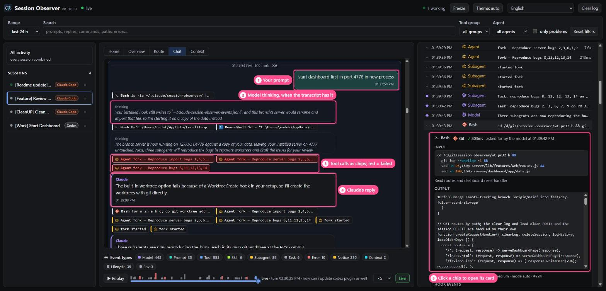
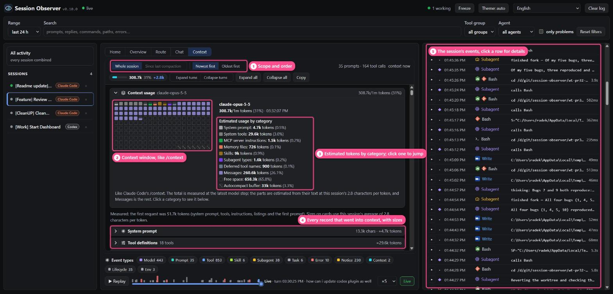

Prompts, tool calls, model steps, subagents, context use and failures from Claude Code and Codex, streamed live to one page on localhost.

fig. 1: Overview of a real Claude Code session, 35 turns, 310 tool calls. Numbered labels added for this page.
A Claude Code and Codex plugin. A hook writes every event to a local JSONL file; a small Node server tails those files and serves a live dashboard.

Every session by project, with its agent, status and subagents.
Totals, one bar per turn, context use and activity. Click a bar to open the turn.

Follow a turn through tool calls and parallel subagents.

Prompts, thinking, tool chips and replies in order.

What fills the context window, down to each record.
See the fixed cost of tools, MCP servers, skills and memory before your first prompt. Spot the turn that read a 40k-token file. Compare before and after trimming CLAUDE.md.
Watch context grow against the window and the 80% line. Scope to since last compaction to see what the model holds right now.
Filter to only problems, open the turn marked ×, read the exact command and output that failed.
Each parallel subagent gets its own line in Route, nested under the turn that started it.
Desktop notifications and u jump to the next session waiting on a permission or a question.
Read how the model reasons, which skills fire, and how Claude Code and Codex solve the same task.
claude code / codex # both agents, one log └─ hook event ─▶ scripts/hook.js # exits 0, never blocks └─ append ─▶ sessions/2026-11-26/3fa9…c1.jsonl └─ tail every 400 ms ─▶ server/server.js └─ live updates ─▶ http://127.0.0.1:4777 ✓ node built-ins only ✓ one file per session ✓ nothing leaves your machine
Using it? Tell us how →